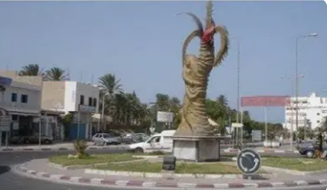
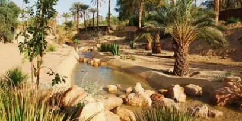
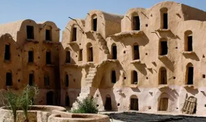
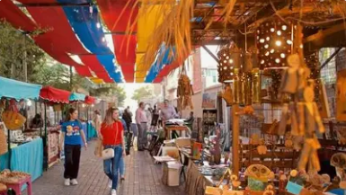

Oasis Maritime du Sahara

Gabès est un gouvernorat situé sur la côte sud-est de la Tunisie, à la limite du Sahara. C'est une région unique au monde où l'oasis rencontre directement la mer Méditerranée, créant un écosystème exceptionnel.
La ville de Gabès, chef-lieu du gouvernorat, est célèbre pour son oasis maritime, la dernière oasis littorale de la Méditerranée. Elle combine palmeraies luxuriantes, plages de sable fin et port industriel.
Le gouvernorat se distingue par son oasis maritime unique au monde, ses traditions berbères amazighes préservées, son agriculture oasienne millénaire, ses villages de montagne comme Matmata, et son artisanat ancestral du henné et des nattes.
Dernière oasis littorale de la Méditerranée. Palmeraies jusqu'à la plage, système d'irrigation ancestral, agriculture à trois étages. Phénomène unique où le désert rencontre la mer.
Village troglodyte berbère mondialement célèbre. Maisons creusées dans le sol avec cours circulaires. Décors du film Star Wars. Architecture souterraine millénaire adaptée au climat.
Production du meilleur henné de Tunisie et d'Afrique du Nord. Culture traditionnelle dans l'oasis, qualité exceptionnelle reconnue. Artisanat et cosmétique naturelle ancestrale.
Nattes et tapis tissés en alfa et palmier. Vannerie traditionnelle, poterie berbère, bijoux en argent. Savoir-faire ancestral transmis de génération en génération.

Oasis maritime unique s'étendant sur 1000 hectares jusqu'à la mer. Système d'irrigation millénaire par seguias, agriculture à trois étages (palmiers-arbres fruitiers-cultures maraîchères). Palmeraies de 300 000 palmiers dattiers, jardins luxuriants. Patrimoine agricole exceptionnel menacé.

Village troglodyte berbère spectaculaire avec maisons souterraines creusées à 10 mètres de profondeur. Cours circulaires à ciel ouvert, chambres creusées dans les parois. Célèbre pour avoir servi de décor à Star Wars. Architecture unique adaptée aux températures extrêmes.

Souk traditionnel animé au cœur de l'oasis, lieu de rencontre entre nomades du désert et citadins. Marché aux épices coloré, henné de Gabès, dattes fraîches, artisanat local. Ambiance authentique du sud tunisien, traditions commerciales ancestrales.